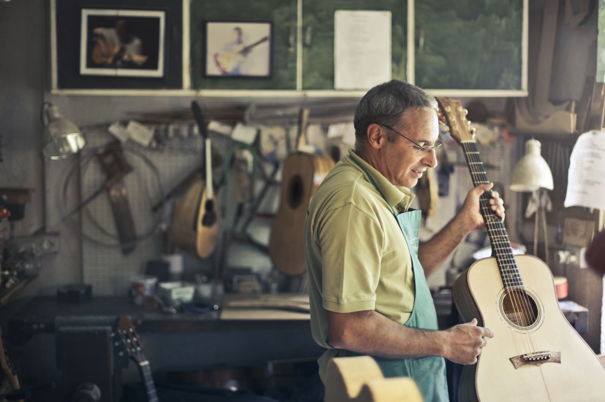
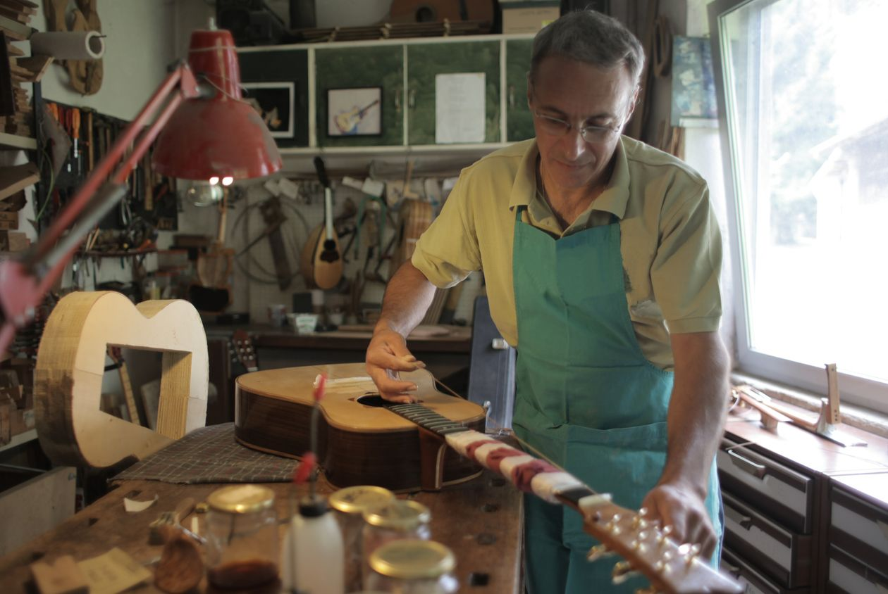
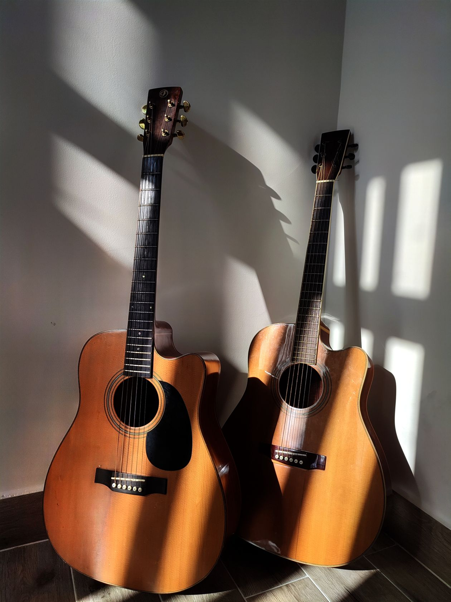
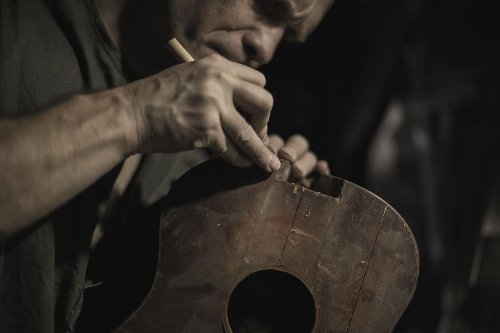

No. 48Model D — Dreadnought
In build- Top
- Sitka spruce
- Back & sides
- Indian rosewood
- Scale
- 25.4″
- Nut width
- 1-11/16″
- Year
- 2026
A commission for a flatpicker in Johnson City. Forward-shifted scalloped bracing, voiced for volume.
Silas Merritt builds steel-string acoustic guitars to commission in a one-man workshop in Asheville — eight to ten a year, each one tap-tuned and voiced before the box is closed. The same bench takes in repair and setup work for players across western North Carolina.

Every guitar is numbered in the order it was built. These are the six most recent — what each is made of, and where it is now. Select a photograph to look closer.
A commission for a flatpicker in Johnson City. Forward-shifted scalloped bracing, voiced for volume.
Built on spec between commissions and played in at the bench. Warm, quick, and dry in the low end. $5,650.
A 12-fret parlor with a wide neck for fingerstyle. Small body, full voice, nothing wasted.
Built for a rhythm player who drives a band from the back line. Loud, slow to break in, worth it.
Cedar over rosewood for a player who records more than he performs. Warm at low volume, honest at high.
Maple keeps a small guitar focused: bright, quick, and forward. Built for a stage parlor, and it behaves like one.
A note on the photographs: they are detail photographs — tops, fretboards, the bench, the finishing room — rather than portraits of each numbered guitar. Every photograph on this site is credited in CREDITS.md.
A guitar’s voice starts as a pairing. The top does most of the talking; the back and sides decide how the sound projects and where it is coloured. Choose a top and a back to read how the pairing behaves — the same conversation held at the bench before any commission is booked.
Ten to twelve weeks on one bench, in one pair of hands. The stages below are the same for every commission; what changes is the voicing, which is set by the player the guitar is being built for.
Tops and backs arrive as matched sets and are stickered in the wood store for at least two years. A moisture meter has the final word: a top reading above 8% does not get built.
Before the queuePlates are joined and thicknessed between 2.4 and 2.8 mm. The target is set by stiffness — measured by deflection under a known weight — rather than by a fixed number copied from the last guitar.
Weeks 1–2The X-brace is glued and carved, and the top is tapped and flexed as wood comes off the braces. This is the voicing: brace height and scalloping decide how freely the top will move, and for whom.
Weeks 3–4Sides are bent on a heated form, neck and tail blocks fitted, linings glued, the back braced and joined. Once the box is closed it starts to answer a tap like a drum.
Weeks 5–6A mahogany neck is carved to the profile agreed in the specification, the ebony or rosewood board radiused, fretted and bound. Neck angle is set against the finished box, not a jig.
Weeks 6–8Wood binding and purfling are mitred and glued by hand — the frame that protects every edge the guitar will ever knock against a table corner.
Week 8Pore-filled, sealed and finished as lightly as the wood allows. Finish protects the guitar, and every extra coat is weight the top has to carry when it moves.
Weeks 9–11Nut and saddle are cut from bone, action set to the player’s hand — typically 2.4 mm on the bass side, 1.8 mm on the treble, at the 12th fret — then the guitar is played in at the bench for a week before it is cased.
Week 12
The queue currently stands at 14 months from deposit to build start. Prices below are the starting points for the standard specification; the specification sheet you sign is the price you pay.
We talk about how you play, what you play, and what your current guitar does that you would change. Body size and woods are chosen from that — not from a catalogue.
Every decision is written down: woods, scale length, nut width, neck profile, bracing, appointments, price. You sign the sheet. The sheet is what gets built.
One third holds your slot in the queue, one third falls due when the build starts, and the balance on completion. The first third is refundable until wood is cut for your guitar.
Ten to twelve weeks on the bench. You receive photographs at two moments: the closing of the box, and the first stringing — the points where a guitar becomes a guitar.
The guitar is set up to your hand at collection, and the first adjustment inside six months is free. New guitars move as they settle; the setup should move with them.
| Model P — Parlor12-fret, 24.9″ scale | $4,600 |
|---|---|
| Model O — OM14-fret, 25.4″ scale | $5,400 |
| Model D — Dreadnought14-fret, 25.4″ scale | $5,800 |
Standard specification included in every price: spruce or cedar top; rosewood, mahogany or walnut back and sides; bone nut and saddle; hard case.
| Cutaway | +$500 |
|---|---|
| Arm bevel | +$650 |
| Pickup fittedK&K Pure Mini or LR Baggs Anthem | +$275 |
| Custom inlayHeadstock or fretboard, your design or mine | from $300 |
| Brazilian rosewoodA small, documented pre-Convention stock is held. When it is gone, it is gone. | Per set |

The repair bench is where most local players first meet the workshop. Every job starts with a written estimate, agreed before any work begins — no surprises on collection.
| Full setupClean, fret polish, truss-rod adjustment, action and intonation set | $95 |
|---|---|
| Fret level, crown & polish | $240 |
| Bone nut, hand-cut | $85 |
| Bone saddle, hand-cut & compensated | $85 |
| Top crack repair, cleated & sealed | from $160 |
| Bridge re-glue | $220 |
| RefretRosewood or ebony board | from $420 |
| Neck reset | from $680 |
Turnaround is usually two to three weeks; a setup can often be turned around in one. The bench also takes mandolins and archtops — ask first.

“It records like a guitar that has already been mixed. Silas voiced the top down until the low end stopped fighting the microphone — I have stopped reaching for EQ on it entirely.”
Daniel Reyes — session guitarist, Nashville. Owner of No. 41, a cedar and Indian rosewood OM built to record under vocals.
Commissions, repairs and setups all start the same way: a short enquiry with enough detail to answer properly.